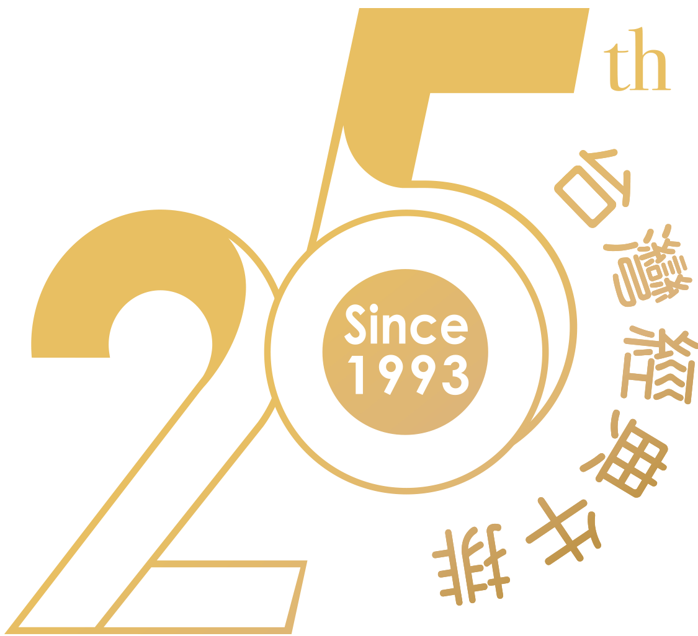

25th 台灣經典牛排
王品 只款待心中最重要的人
致敬25•時光回廊
二五樂章-男孩蛻變成男人的階段
來到人生序曲第25樂章，妳/您，是什麼樣子？
25歲的你，有年輕的衝勁又具有成人的沉穩
第十樂章，你見證台灣經濟起飛，覺得生活單純而美好
第二十樂章，踏實生活，你奮力向前奔跑不斷閃耀青春
第二五樂章，一路走來的堅持，努力成為更理想的自已
如果時光能倒回，【送段話】給25歲的自己
2018，也是《王品牛排》的25週年
我們一起，讓每一頁每一行都無與倫比的精采
#經典 #王品 #致25歲的自已
二五年1/4世紀的堅持
一頭牛僅供6客王品牛小排
嚴選最精華第六至第八對肋骨
獨家秘製中式佐料浸漬兩天兩夜
歷經250℃慢火烘烤一個半小時
65度高溫瓷盤盛裝，呈獻香嫩多汁的全熟牛排
歲月淬鍊台灣經典，征服全球3,500萬華人味蕾

【堅持不簡單，您分享我款待】
活動時間：2018/7/9 ~ 2018/8/31止
活動方式：分享+TAG
1、公開分享此影片至個人FB或IG
2、PO文 #王品25週年
#台灣經典牛排
#蟬聯二屆金馬指定連鎖牛排餐廳
3、結帳時出示FB分享頁面 獨享【金馬套餐85折】
注意事項：
結帳時出示分享畫面，消費尊享金馬套餐【85折】。
不適用禮品兌換且不與其他折扣與優惠併用。
不適用禮券、外帶、折現或找零，10%服務費另計。
王品牛排保有隨時修改、暫停或解釋本活動之權利。
台灣經典 • 王品牛排
經典煥新•一店一風格
以經典向地方致敬，體現優雅在地文化
見證經典喚起美好年代，與您共創玫麗時光
高雄中正店(工業藝廊)
高雄鋼鐵工業重鎮，以鐵匠工藝打造藝文空間。
高雄博愛店(遊艇)
向高雄港都致敬，以遊艇為設計軸心，打造海上廚房。

桃園同德店(招待所)
頂級商務地段，由收藏陳設與挑高空間，體現大器私人招待所。

台北羅斯福店(私廚)
私人廚房概念打造Open Kitchen，營造家宴款待貴賓。
以經典向國際港都致敬
高雄為鋼鐵工業重鎮，其造船工業聞名國際
以鐵匠工藝打造文化藝廊，展現工業藝文空間